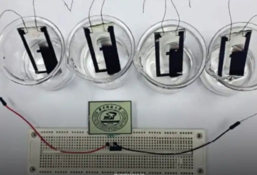

What If the Air Around Us Could Power Our Devices?
Imagine living on a planet where simply breathing the air around you could power your devices. That’s the groundbreaking vision behind UMass Amherst’s discovery of generating electricity from humidity. By harnessing the natural moisture in the atmosphere, researchers are opening the door to a future where our phones, laptops, and everyday gadgets could charge wirelessly—directly from the air itself.

The Breakthrough
Researchers at UMass Amherst have developed a groundbreaking material capable of generating electricity directly from the humidity in the air. This innovation represents a major step toward a future powered by sustainable and renewable energy. By tapping into something as abundant as atmospheric moisture, this discovery could revolutionize clean energy solutions and reduce our reliance on traditional power sources.
What is Air-Generated Electricity?
Air-generated electricity, also called Hygro-Electricity, works by turning humidity into a steady source of power. The process begins with recognizing the presence of water vapor in the air, which then moves through tiny nanopores in the material. As these water molecules pass through, they create a charge imbalance that results in a continuous flow of electricity. This simple yet powerful mechanism has the potential to reshape how we think about renewable energy.
Key Highlights
Hygro-electricity offers several remarkable benefits that make it a game-changer in clean energy. Since it relies on natural humidity, the process is completely sustainable and eco-friendly, producing no pollution or harmful byproducts. Even better, it can generate electricity continuously, 24/7, without the need for sunlight, wind, or external input. Its adaptability across different climates and environments further enhances its potential, making it a versatile solution for powering the future.
Potential Applications
The applications of hygro-electricity could transform the way we use and interact with technology. Imagine sustainable infrastructure where entire buildings generate their own power directly from the air, or portable electronics that never need to be plugged in again. Wearable devices could be designed to produce electricity from clothing, while remote sensors in isolated areas could run indefinitely without external power sources. These possibilities highlight how air-powered energy could seamlessly integrate into everyday life, creating a future of limitless, clean electricity.